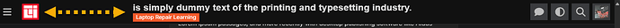

I use FKB Pro theme.
The sytle below is from component Topic List Preview .How to make topic list of specific category like this, and other categories use FKB Pro.
 (1506×516 89.5 KB)")
Thanks.
I use FKB Pro theme.
The sytle below is from component Topic List Preview .How to make topic list of specific category like this, and other categories use FKB Pro.
Thanks.
@Don Can this new setting only disable specific category, and other categories still use FKB Pro theme?
I was wondering if it would be possible to move the tags above the content? They seem to be taking up quite a bit of space below.
+1 on that this would be extremly helpful 
On another note does anyone know how to show topics in full length in the category page? Same as Framer does it? Announcements | Framer - I tried with Javascript /CSS and no luck
Hi 
I was trying to see if this was previously discussed on this topic but maybe I missed it…
Is there any way to include the latest reply to a topic in the topic lists display? I would like users to see if there was a reply or question posted under a specific topic already on the home page (list of latest topics).
Yes. Is there a way to include them in the topic excerpt on the topic list page?
Yes you would have to create a simple plugin to fetch latest 2 replies and then display it. Also, you would have to adjust the css to accommodate the replies.
Nice theme, great work.
I’m running a highly modified version and it works well, one thing i would like to prevent from happening is the layout readjustment when the sidebar is hidden.
(Pictured cropped off the right side, content is centered)
With Sidebar open
With Sidebar closed
Is there any chance of adding an option to disable this functionality?
Desired outcome (this but centered, this is a simply delete of the sidebar to provide a screenshot example of what i mean)
Hello 
Yeah, that’s possible relatively easily with modifying some CSS.
However it depends on what the following meaning exactly:
I assume you forked the theme and as I remember everything what you need to do this in the
scss/desktop/fkb-d-topic-list.scss file. There you will see the .has-sidebar-page class which is the breakpoint in the two separate style. Actually, you have to compare the .list-controls. I’ll can make a PR if you have a forked version…
Hello  Sorry for the late reply. Yeah, that’s possible. But the Highest-Post Excerpts in Topic List plugin is required. I think I’ll built this setting…
Sorry for the late reply. Yeah, that’s possible. But the Highest-Post Excerpts in Topic List plugin is required. I think I’ll built this setting…
Note: I’ll have to modernize the template to be compatible with the new Glimmer topic list. This process may change things compare the current theme. So if you modify the theme, the new version may will break your changes…
Hi! Love the theme!
I’ve noticed that clicking the “Comment” icon opens up this menu:
")
Is there a way to have it so clicking the comment icon opens up the topic instead?
Hello 
That’s not possible for now. Is this something what more users want? Because I can modify the theme to works like that if it would be a common thing. I am not sure about this… 
I think that feature was removed in the glimmer topic list implementation anyway.
https://github.com/discourse/discourse/commit/3eada7b572a4b6c015e98d96e6b7815221ab9bd3
Here at Meta, the replies count already takes you to the first post instead of asking whether you want to go to the top or bottom. (I still haven’t gotten used to the fact that clicking “replies” takes me to the opposite)
Oh great, I didn’t notice this yet. Thanks @Moin 
Thanks for the reply, no i actually prefer to keep the base theme and override any CSS and/or templates if desired (usually minimal template changes) so instead it’s a theme component on top of your branch. This is why i was hoping for a chance to just have a toggle in the settings
Would it be possible to hide the description for topics with images, but still show it for those without one?
I still don’t see any errors just need to turn off notifications, but hope @Don can give suggestions and fix
It has to do with the fact Discourse moved to FontAwesome6 from FontAwesome5 and the FKB Social theme hasn`t updated the icon names/tags in its code. I will be working with our IT guy to create a fork fixing this should the update not come before the end of the grace period set by Discourse (which I believe is Q2 2025).
Hello 
Thanks for the report 
I’m working on a big update to be compatible with new Discourse changes. But I need more time to update everything…
The fontawesome issue is mostly coming from the fkb_panel_items setting. Which still use FA5 icons. Until then you can change it manually in that setting. Change: cog → gear, pencil-alt → pencil and if you added custom ones than you can check the FA6 icons on fontawesome website.
Hello 
I’ve merged the update for the glimmer topic list compatibility. 
Finally the console is clean 
Hello 
Thanks for the report, this seems happening when glimmer topic list is failed on mobile. 
I’ve merged a fix, if glimmer topic list failed on mobile it adds a class to the body with a new style for it. Now it should be better.
I’ve made some more tweaks because there could be other issues e.g. with bulk select. So with this update, it will use the old (template, css) if the glimmer topic list is failed. If the glimmer topic list active it will drop the old theme (template, css) and use the new one. Hopefully this will works well. 
Hello,
I notice that my category descriptions are duplicated only when a topic is pinned in the category. This issue only occurs with the FKB Pro theme and persists even after a complete reinstallation.
The duplication disappears if I unpin the topic or use another theme. Could you please let me know if there’s a solution to fix this behavior?
Thank you for your help.
Hey @Kevin7  Nice catch. Thanks for the report.
Nice catch. Thanks for the report.  I’ve merged an update to hide the pinned topic default excerpt: UX: hide pinned topic excerpt to prevent duplicated topic excerpt
I’ve merged an update to hide the pinned topic default excerpt: UX: hide pinned topic excerpt to prevent duplicated topic excerpt
Did you try to click the button in the right bottom corner?
Did you update theme to the latest?
Ah, ok I see. Thanks for the report. I fixed it, please update the theme. 
Hi, in the Category in homepage, the badge style box is not complete. see the picture below.
But in new topics its okay.
Hello  Thanks for the report! I fixed it here. Please update the theme.
Thanks for the report! I fixed it here. Please update the theme. 
updated and its done. Thank you for your quick response.

hi, can you share this themes customization, it looks nice
I tested this theme FKB Pro with Topic List Preview components and Topic List Thumbnails Components but not rendering well. but in reality, we don’t need such components for FKB Pro Theme. because it already has preview feature. so, in finally chose this theme.
Hi, is there a way to reduce the gap between the topic header and logo? when there is menu sidebar present. see the picture below 
@Don
Thanks
How to make FKB Pro compatible with Quote Callouts? That is, use another style for quoting.
Thanks for this great theme.
Do you mean you want the callouts style the same as the quote?
For example,
hi, its solved automatically after discourse updates.
Yeah. It works.
@Jun You can achieve that with the TC settings.
Here is what you can do.
First, define the global style: width, style and radius:
Callout border width: 0 0 0 5px
Callout border style: solid
Callout border radius: var(--d-default-border-radius)
You can also set Callout border color if you want the same border color for all the callouts.
Otherwise, you can define the color per callout.
Hey! I just updated our Discourse to the newest updates and it seems like something in it broke the topics layout as they are not contained to the “bubbles” as before. So far the option to disable the FKB Pro topic layout fixed the issue. I am attaching screenshots of the issue below together with the admin console which now shows an error. I had to blur some personal data of our users so I hope that is not too disturbing.
The SCSS mixin sticky has been removed from core recently (DEV: Remove unnecessary scss mixins (#31355) · discourse/discourse@46c568a · GitHub).
Thanks for the report @Obi_Sam_Kenobi and thanks @Arkshine for the heads up. 
I merged a fix please update the theme.
@Don I can see this message:
Also noticed this since uploading to latest build
Hey @sok777 
Sorry I can’t repro it. I’ve installed the theme on the latest Discourse and didn’t notice this kind of errors you see. Is there any other theme component may cause this? Can you share your site url?
 (1920×1006 139 KB)")
 button highlighted in red. (由 AI 生成标题) (892×944 82.9 KB)")
 (1006×1516 114 KB)")
 featuring a gaming area with text in Chinese, indicating various game titles and content such as RPG, SLG, and 3D games. It also includes a promotional section with colorful graphics and a user profile of \"@VegaMonika.\" (由 AI 生成标题) (1920×1182 170 KB)")
 (1920×696 122 KB)")
 (1592×277 66.9 KB)")
 (1050×1043 75.6 KB)")
{kind=link}
{kind=link}
{kind=link}
{kind=link}
{kind=link}
{kind=link}
{kind=link}
{kind=link}
{kind=link}
{kind=link}
{kind=link}
{kind=link}
{kind=link}
{kind=link}
{kind=link}
{kind=link}
{kind=link}
{kind=link}
{kind=link}
{kind=link}
{kind=link}
{kind=link}
{kind=link}
{kind=link}
{kind=link}
{kind=link}